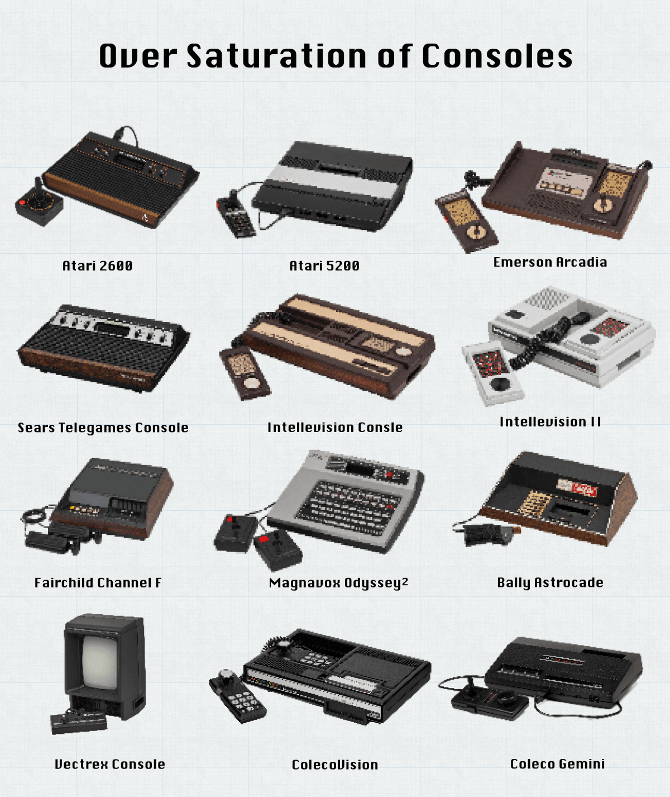

Overview
The 1983 Videogame Crash (also known as Atari Shock in Japan) was the greatest recession in the video game market, moslty registered in the U.S. The gains generated by this market fell by as much as 97% within two years, causing the closure or withdrawal from the market of many of the largest and most famous American companies in the industry.This event is considered to be the watershed between the second and the third generation of videogames.
Causes
The Saturation of the Market
Among the many causes of the collapse, one of the main one was certainly the saturation of the market:
there were in fact a huge amount of consoles and games, sold at ever lower prices. Just think that in 1983 twelve consoles
were available on the U.S. market, each with its own specific library of games not compatible with any other console.
Moreover, in order to be able to continue to produce new games at such a high pace, many companies (especially
the smaller ones) began to publish bad quality titles, such as "Chase the Chuck Wagon" or "Skeet Lost".
Atari
was also involved in this, as the E.T. game was produced in only 6 weeks for lack of time. As a result, 3.5
million cartridges were returned to the manufacturer, who, not knowing where to store them, had them buried
in a New Mexico landfill.
The Fierce Competition
In addition to this, the increasing competitiveness among companies, which resorted to industrial espionage and any way to try to snatch the most skilled developers from competitors, created a climate of tension and more and more programmers were pushed to set up their own, leaving this sick environment.The last factor, surely important, is the birth of the home computer market (for example the Commodore 64); machines more powerful than the consoles then on the market and surely able to be used also for other purposes besides the game; unlike many consoles, they were equipped with floppy disk instead of a ROM cartridge (that can only be read).
|  |  |
|
|---|---|---|
| Maybe too many | Isn't that right? |
Results
Between 1983 and 1985 large companies in the sector such as Mattel, Magnavox and Coleco left the sector, while smaller companies (such as Imagic) were forced to close down, while others survived only thanks to massive tax refunds. This crisis, however, had other important implications, such as the boom in arcades and arcade games in general; branch of the industry that temporarily strengthened with the weakening of home-based products.